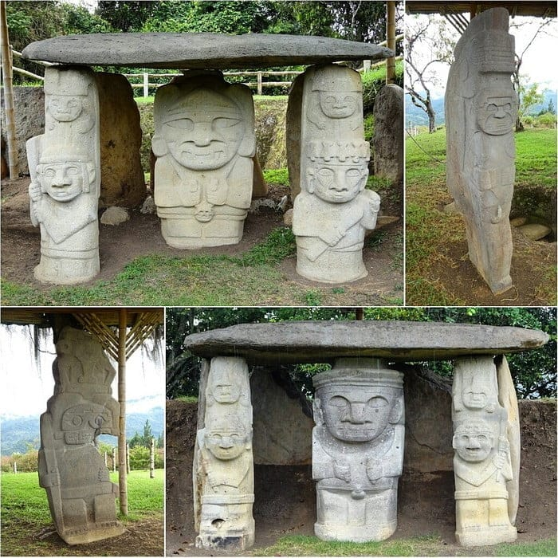
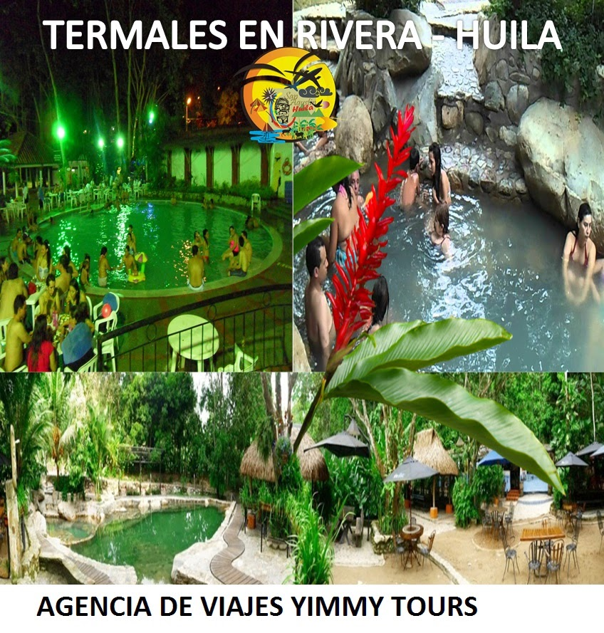
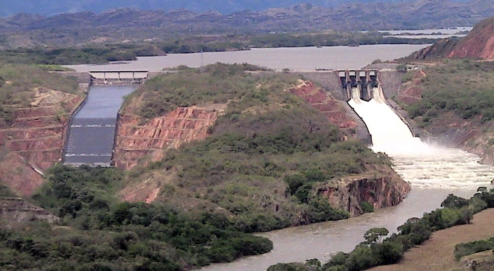
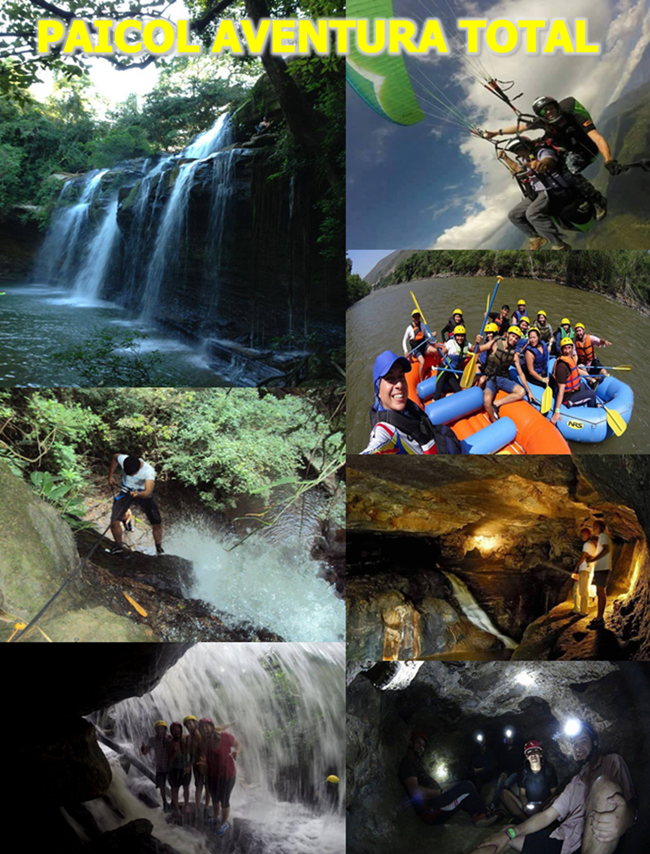
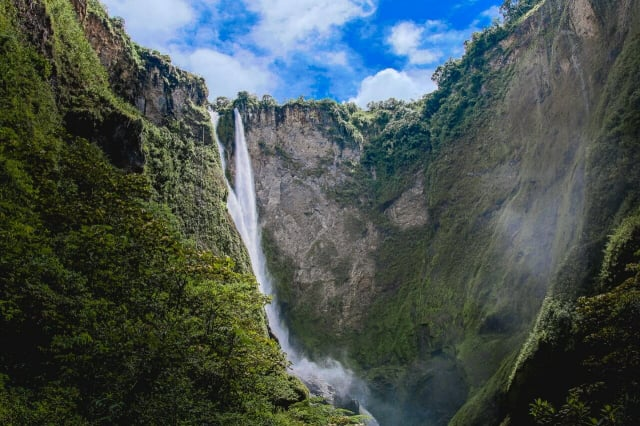
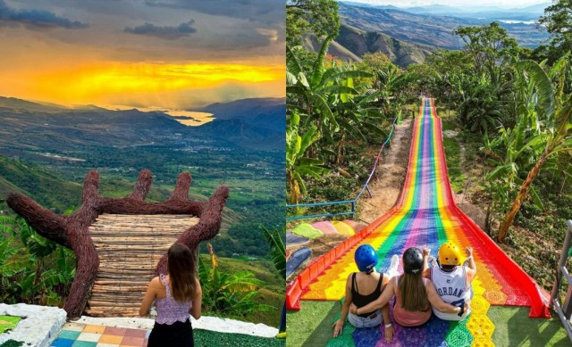
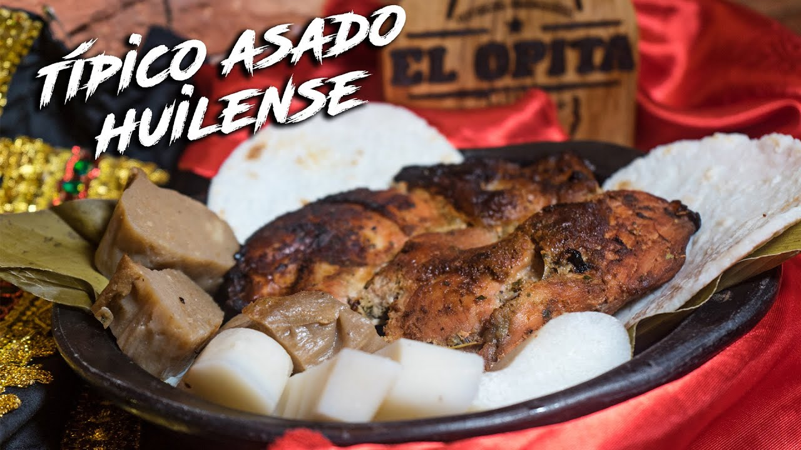
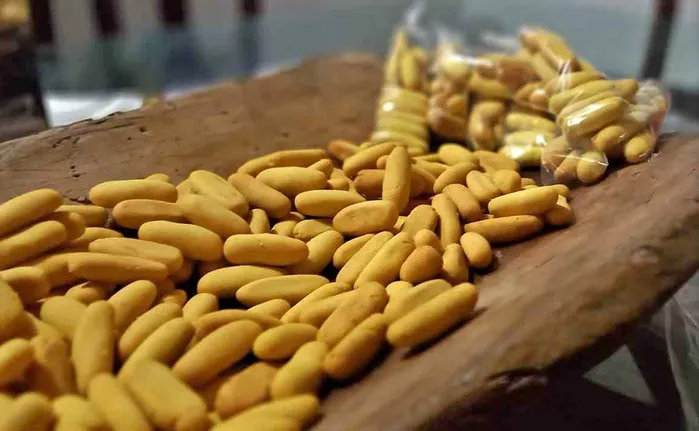
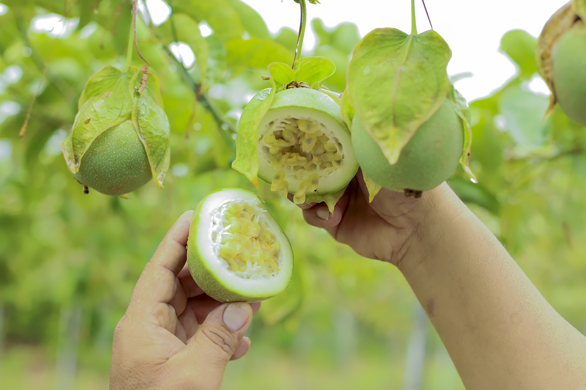

1. Desierto de la Tatacoa: Un impresionante paisaje árido con formaciones rocosas y cielos ideales para la observación astronómica.
2. Parque Arqueológico de San Agustín: Declarado Patrimonio de la Humanidad por la UNESCO, alberga estatuas de antiguas civilizaciones precolombinas.
3. Termales de Rivera: Aguas termales rodeadas de naturaleza, perfectas para la relajación.
4. Represa de Betania: Un embalse donde se pueden realizar actividades como pesca y deportes acuáticos.
5. La Caja de agua y Cascada de la Serpiente Ubicados en el municipio de Paicol donde la experiencia es inolvidable.
6. Salto del Mortiño: Impresionante cascada rodeada de vegetación exuberante ubicada en Isnos.
7. Mirador de la Mano del Gigante: Un atractivo turístico con vistas panorámicas del paisaje huilense.
1. Asado huilense: Cerdo marinado con especias y cocinado en horno de leña.
2. Bizcocho de achira: Galletas crujientes hechas con almidón de achira.
3. Cholupa: Pulpa de la familia del maracuya exclusiva del Departamento del Huila.
El sector económico del Huila se basa principalmente en la agricultura, destacándose la producción de café de alta calidad, arroz, cacao y frutas como el plátano. También cuenta con una importante industria piscícola, especialmente en la represa de Betania. El turismo ha crecido gracias a su riqueza arqueológica y paisajes naturales. Además, la producción de energía hidroeléctrica y la extracción de petróleo contribuyen significativamente a su economía.